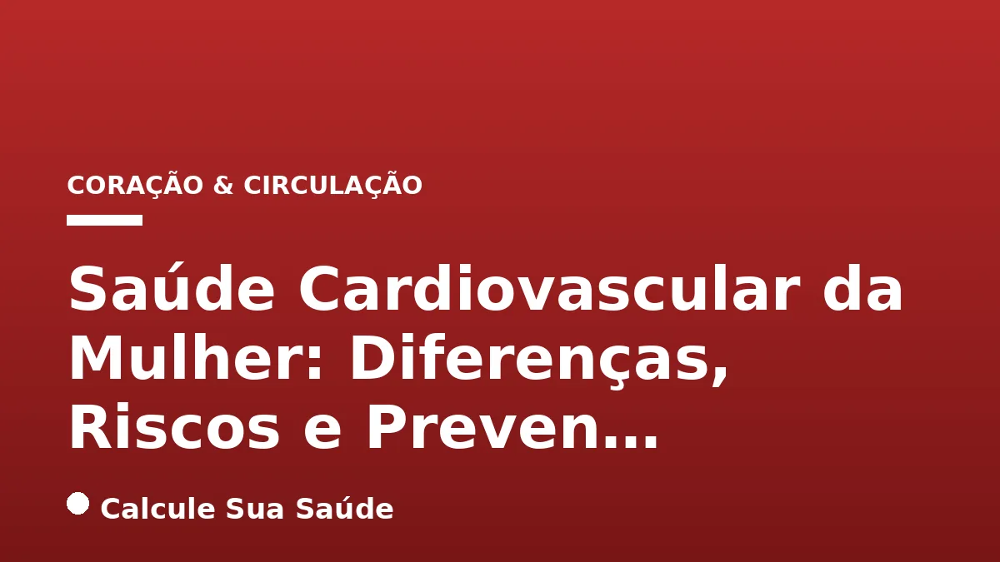

Aviso médico importante
Este conteúdo é educativo e informativo e não substitui a consulta, o diagnóstico ou o tratamento de um profissional de saúde. Em caso de sintomas, procure orientação médica.
Índice do Artigo
- 1. A Epidemia Silenciosa: Doenças Cardiovasculares em Mulheres
- 2. Fisiopatologia e Apresentação Clínica: Por Que as Mulheres São Diferentes?
- 3. Fatores de Risco Tradicionais com Impacto Diferenciado
- 4. Fatores de Risco Específicos do Sexo Feminino
- 5. Sintomas Atípicos do Infarto em Mulheres: O Perigo do Subdiagnóstico
- 6. O Desafio do Diagnóstico e a Sub-representação em Pesquisas
- 7. Estratégias de Prevenção Baseadas em Evidências
- 8. Abordagens Terapêuticas e Manejo Integrado
- 9. Desmistificando a Saúde Cardiovascular Feminina: Mitos e Fatos
- 10. Panorama Epidemiológico das DCV no Brasil: Dados Alarmantes
- 11. A Importância da Conscientização e da Colaboração Interdisciplinar
- 12. Conclusão: Um Chamado à Ação para a Saúde do Coração Feminino
- 13. Perguntas frequentes
Historicamente, as doenças cardiovasculares (DCV) foram erroneamente percebidas como uma preocupação predominantemente masculina. Contudo, a evidência científica atual desmistifica essa visão, revelando que as DCV são, na verdade, a principal causa de morte em mulheres globalmente e no Brasil, superando todos os tipos de câncer combinados, incluindo o câncer de mama. Essa realidade exige uma reorientação na compreensão, diagnóstico e manejo da saúde cardiovascular feminina.
A fisiopatologia, a apresentação clínica e a resposta aos tratamentos das DCV podem variar significativamente entre homens e mulheres. Fatores hormonais, reprodutivos e socioeconômicos específicos do sexo feminino desempenham um papel crucial na modulação do risco cardiovascular, tornando imperativa uma abordagem personalizada e baseada em evidências. Ignorar essas particularidades pode levar a subdiagnóstico, atraso no tratamento e desfechos desfavoráveis.
Este artigo aprofundará as diferenças inerentes à saúde cardiovascular da mulher, explorando os fatores de risco tradicionais e específicos, a apresentação atípica dos sintomas, os desafios diagnósticos e as estratégias de prevenção e tratamento com respaldo científico, visando capacitar as mulheres a protegerem seu coração e promoverem uma vida mais saudável.
Em resumo
- As doenças cardiovasculares são a principal causa de morte em mulheres, superando todos os tipos de câncer combinados.
- Mulheres apresentam fatores de risco específicos (menopausa, eventos adversos da gravidez, SOP) e uma maior suscetibilidade a fatores tradicionais como diabetes e tabagismo.
- Os sintomas de infarto em mulheres são frequentemente atípicos e mais sutis, o que leva a atrasos no diagnóstico e tratamento.
- A sub-representação feminina em ensaios clínicos e o mito da doença masculina contribuem para o subdiagnóstico e manejo inadequado.
- A prevenção é fundamental e pode reduzir em até 80% os casos de DCV com modificações no estilo de vida e controle rigoroso dos fatores de risco.
- Uma abordagem integrada, combinando tratamento farmacológico e não farmacológico, junto à colaboração interdisciplinar, é essencial para otimizar o cuidado.
1. A Epidemia Silenciosa: Doenças Cardiovasculares em Mulheres
As doenças cardiovasculares (DCV) constituem um grupo heterogêneo de condições que afetam o coração e os vasos sanguíneos, incluindo o infarto do miocárdio, o acidente vascular cerebral (AVC), a insuficiência cardíaca e as arritmias. No contexto global e brasileiro, as DCV representam a principal causa de mortalidade feminina, um fato que desafia a percepção pública e, por vezes, a prática clínica. No Brasil, por exemplo, uma em cada cinco mulheres tem risco de sofrer um infarto, e a probabilidade de uma mulher morrer de infarto é 50% maior em comparação com os homens. Essa realidade sublinha a urgência de uma compreensão aprofundada das particularidades da saúde cardiovascular feminina.
Apesar de o número de internações por infarto ter aumentado tanto em homens (158%) quanto em mulheres (157%) entre 2008 e 2022 no Brasil, a incidência de doença isquêmica do coração (DIC) ainda é maior em homens. Contudo, a prevalência de angina (dor no peito) em seus diferentes graus é consistentemente maior em mulheres, indicando uma carga significativa de doença cardíaca isquêmica que pode ser subestimada ou mal interpretada. Além disso, os óbitos e anos de vida ajustados por incapacidade (DALYs) por Acidente Vascular Cerebral (AVC) foram maiores em mulheres do que em homens no Brasil em 2019, reforçando a gravidade do impacto das DCV no sexo feminino.
2. Fisiopatologia e Apresentação Clínica: Por Que as Mulheres São Diferentes?
As diferenças entre homens e mulheres na fisiopatologia e apresentação clínica das DCV são multifacetadas e complexas. Enquanto os homens tendem a desenvolver aterosclerose obstrutiva em grandes artérias coronárias, as mulheres são mais propensas a apresentar disfunção microvascular coronariana e aterosclerose não obstrutiva ou erosão de placa, que podem ser mais difíceis de detectar pelos métodos diagnósticos convencionais. Essa distinção anatômica e funcional é crucial para entender a manifestação atípica dos sintomas e os desafios diagnósticos.
Além das diferenças na doença coronariana, fatores hormonais desempenham um papel central. O estrogênio, predominante em mulheres na pré-menopausa, confere um efeito cardioprotetor, influenciando positivamente o perfil lipídico, a função endotelial e a pressão arterial. A queda drástica dos níveis de estrogênio após a menopausa, portanto, é um marco significativo que eleva o risco cardiovascular feminino, equiparando-o ou até superando o risco masculino na mesma faixa etária. Essa transição hormonal é um dos fatores que contribuem para o aumento de 30% nos casos de infarto e cirurgias cardíacas em mulheres com mais de 50 anos.
3. Fatores de Risco Tradicionais com Impacto Diferenciado
Embora muitos fatores de risco para DCV sejam comuns a ambos os sexos, seu impacto e prevalência podem variar significativamente em mulheres. É fundamental reconhecer essas nuances para uma prevenção e manejo eficazes.
Hipertensão Arterial
A hipertensão arterial é um dos principais fatores de risco para DCV em mulheres, com prevalência crescente com a idade. Em mulheres, a hipertensão pode ter características distintas, como a hipertensão isolada sistólica, mais comum após a menopausa. O controle rigoroso da pressão arterial é essencial para mitigar o risco de eventos cardiovasculares, como infarto e AVC. Para saber mais sobre o tema, leia nosso artigo sobre Pressão Alta na Juventude: Causas, Riscos e Prevenção.
Dislipidemia e Diabetes Mellitus
A dislipidemia, caracterizada por níveis anormais de colesterol e triglicerídeos, é um fator de risco relevante para ambos os sexos. No entanto, em mulheres, a elevação dos triglicerídeos e a redução do colesterol HDL (o 'colesterol bom') podem ter um impacto prognóstico mais significativo. O diabetes mellitus, por sua vez, confere um risco cardiovascular desproporcionalmente maior às mulheres, aumentando em 45% a probabilidade de desenvolver DCV em comparação com homens diabéticos. Além disso, mulheres diabéticas tendem a ter um pior controle glicêmico e maior incidência de complicações microvasculares.
Tabagismo, Obesidade e Sedentarismo
O tabagismo é um fator de risco potente, e mulheres fumantes possuem 25% mais risco de desenvolver DCV do que homens fumantes. A combinação do tabagismo com o uso de contraceptivos orais é particularmente perigosa, aumentando exponencialmente o risco trombogênico. A obesidade e o índice de massa corporal (IMC) elevado são fatores de risco crescentes no Brasil, impactando principalmente as mulheres. O sedentarismo, por sua vez, contribui para a inatividade física e o acúmulo de gordura, elevando o risco cardiovascular. A síndrome metabólica e a doença renal crônica também são condições que aumentam significativamente o risco em ambos os sexos, mas com particularidades na apresentação feminina.
4. Fatores de Risco Específicos do Sexo Feminino
Além dos fatores de risco tradicionais, as mulheres enfrentam desafios cardiovasculares únicos, intrinsecamente ligados à sua biologia e experiências de vida.
A Menopausa e a Perda da Proteção Estrogênica
A menopausa marca uma transição crítica na vida da mulher, caracterizada pela cessação da função ovariana e a consequente queda acentuada dos níveis de estrogênio. Este hormônio, antes cardioprotetor, exerce efeitos benéficos sobre o perfil lipídico, a função endotelial e a pressão arterial. Com a sua diminuição, observa-se um aumento na incidência de dislipidemia, hipertensão e disfunção endotelial, elevando o risco de DCV. A terapia hormonal na menopausa é um tópico complexo e deve ser cuidadosamente avaliada individualmente, pois pode ser um fator de risco em algumas mulheres, dependendo do tipo, dose, via de administração e momento de início.
Eventos Adversos da Gravidez: Um Teste de Estresse Cardíaco
A gravidez, embora um processo fisiológico, pode atuar como um 'teste de estresse cardíaco', revelando predisposições a doenças cardiovasculares futuras. Condições como pré-eclâmpsia, eclâmpsia, diabetes gestacional, parto prematuro e o nascimento de um recém-nascido com baixo peso são reconhecidos como fatores de risco independentes para o desenvolvimento de DCV anos ou décadas após a gestação. Mulheres com histórico de pré-eclâmpsia, por exemplo, têm um risco significativamente maior de hipertensão crônica e doença coronariana.
Síndrome dos Ovários Policísticos e Contraceptivos Orais
A Síndrome dos Ovários Policísticos (SOP) é uma condição endócrina comum em mulheres em idade reprodutiva, associada a desequilíbrios hormonais, resistência à insulina, obesidade, hipertensão e dislipidemia, todos contribuindo para um risco cardiovascular aumentado. O uso de contraceptivos orais, embora seguro para a maioria das mulheres, pode aumentar a pressão arterial e o risco de trombose em subgrupos específicos, como fumantes e mulheres acima dos 35 anos, exigindo uma avaliação de risco individualizada.
Doenças Autoimunes e Fatores Socioeconômicos
Mulheres são desproporcionalmente afetadas por doenças autoimunes, como lúpus eritematoso sistêmico e artrite reumatoide. Essas condições inflamatórias crônicas aumentam o risco de aterosclerose acelerada e doenças cardíacas. Além disso, fatores sub-reconhecidos como histórico de violência, privação socioeconômica, baixa escolaridade e discriminação racial exercem uma influência significativa sobre o risco cardiovascular feminino, destacando a complexidade das interações entre saúde, ambiente e determinantes sociais.
5. Sintomas Atípicos do Infarto em Mulheres: O Perigo do Subdiagnóstico
Um dos maiores desafios na saúde cardiovascular feminina é a apresentação atípica dos sintomas de um ataque cardíaco. Enquanto a imagem clássica de dor no peito irradiando para o braço esquerdo é amplamente reconhecida, as mulheres frequentemente experimentam sinais mais sutis e inespecíficos, o que pode levar a atrasos no reconhecimento, diagnóstico e tratamento. Mulheres demoram em média 37 minutos a mais que homens para procurar atendimento e têm 50% mais chance de receber um diagnóstico inicial errado de infarto.
Dor no Peito: Presente, mas Nem Sempre Protagonista
Embora a dor no peito possa ocorrer em mulheres, ela nem sempre é o sintoma predominante ou mais intenso. Muitas vezes, é descrita como um desconforto, pressão ou sensação de aperto, que pode durar alguns minutos, passar e voltar. É crucial notar que cerca de 42% das mulheres com infarto NÃO sentem dor no peito, o que torna a identificação de outros sinais de alerta ainda mais vital.
Sinais de Alerta Menos Óbvios
Os sintomas atípicos, mais frequentes em mulheres, incluem:
- Fadiga extrema e inexplicável: Cansaço desproporcional semanas ou dias antes do infarto, exaustão sem esforço.
- Falta de ar: Dificuldade para respirar sem motivo aparente, mesmo em repouso ou ao fazer atividades leves.
- Dor nas costas, nuca ou mandíbula: Dor entre as escápulas, na nuca ou em ambos os lados da mandíbula, ou nos ombros e braços (não necessariamente o esquerdo).
- Enjoos, indigestão súbita ou mal-estar: Sintomas gastrointestinais semelhantes a gastrite ou refluxo, dor no abdômen.
- Tontura ou atordoamento: Sensação de 'cabeça vazia' ou desmaio.
- Suor frio pegajoso: Diferente do suor de exercício ou menopausa.
- Ansiedade súbita: Uma 'sensação de morte iminente' inexplicável.
- Distúrbios do sono: Acordar no meio da noite com falta de ar ou coração acelerado.
A conscientização sobre esses sintomas atípicos é fundamental para que as mulheres e os profissionais de saúde possam reconhecer precocemente um evento cardíaco e buscar ajuda imediata.
| Sintomas Clássicos (Comuns em Ambos os Sexos) | Sintomas Atípicos (Mais Frequentes em Mulheres) |
|---|---|
| Dor no peito em aperto, que pode irradiar para o braço esquerdo, pescoço, mandíbula, estômago e costas. | Fadiga extrema e inexplicável, cansaço desproporcional. |
| Náusea, vômito, suor frio e desmaio. | Falta de ar sem motivo aparente, dificuldade para respirar. |
| Desconforto no peito (pressão ou aperto, não necessariamente dor intensa). | |
| Dor nas costas (entre as escápulas), nuca ou mandíbula (ambos os lados). | |
| Enjoos, indigestão súbita, mal-estar, dor no abdômen. | |
| Tontura ou atordoamento, sensação de 'cabeça vazia'. | |
| Suor frio pegajoso. | |
| Ansiedade súbita e 'sensação de morte iminente'. | |
| Distúrbios do sono (acordar com falta de ar ou coração acelerado). |
6. O Desafio do Diagnóstico e a Sub-representação em Pesquisas
A complexidade dos sintomas femininos de DCV é agravada por desafios no diagnóstico. A sub-representação de mulheres em ensaios clínicos ao longo da história contribuiu para uma lacuna de conhecimento sobre a fisiopatologia e a resposta a tratamentos específicos para o sexo feminino. Essa lacuna, aliada à persistência do mito de que as DCV afetam predominantemente homens, resulta em um subdiagnóstico e manejo inadequado da doença em mulheres.
A avaliação diagnóstica em mulheres pode ser mais desafiadora. Exames como o eletrocardiograma (ECG) podem apresentar alterações menos óbvias, e testes de estresse podem ter menor sensibilidade ou especificidade em certas condições. A angiografia coronariana, padrão-ouro para detectar obstruções em grandes artérias, pode falhar em identificar a disfunção microvascular ou a doença não obstrutiva, mais comuns em mulheres. Isso ressalta a necessidade de uma abordagem diagnóstica mais individualizada, que considere o perfil de risco e a apresentação clínica da mulher, e que utilize uma gama de ferramentas diagnósticas, incluindo métodos de imagem avançados.
7. Estratégias de Prevenção Baseadas em Evidências
A prevenção é a pedra angular no combate às doenças cardiovasculares em mulheres e pode reduzir significativamente a incidência e a mortalidade. Um estudo de 16 anos da Universidade de Harvard, envolvendo aproximadamente 84 mil mulheres norte-americanas, demonstrou que modificações nos hábitos de vida podem reduzir em até 80% os casos de doenças cardiovasculares. Isso destaca o poder das escolhas diárias na proteção da saúde do coração.
Modificações no Estilo de Vida: O Pilar da Prevenção
A adoção de um estilo de vida saudável é a estratégia preventiva mais eficaz. Isso inclui:
- Alimentação Saudável: Uma dieta rica em frutas, vegetais, grãos integrais, proteínas magras e gorduras saudáveis, como a Dieta Mediterrânea, é fundamental para o controle do peso, da pressão arterial e dos níveis de colesterol. Evitar alimentos ultraprocessados e ricos em açúcares e gorduras saturadas é crucial.
- Prática Regular de Atividade Física: Pelo menos 150 minutos de atividade aeróbica de intensidade moderada ou 75 minutos de intensidade vigorosa por semana, combinados com exercícios de força, melhoram a saúde cardiovascular, controlam o peso e reduzem o estresse.
- Controle do Peso: Manter um Índice de Massa Corporal (IMC) saudável e uma circunferência abdominal adequada reduz a carga sobre o coração e os vasos sanguíneos.
- Abandono do Tabagismo: Parar de fumar é uma das medidas mais impactantes para reduzir o risco de DCV, independentemente da idade ou do tempo de tabagismo.
- Redução do Consumo Nocivo de Álcool: O consumo excessivo de álcool está associado ao aumento da pressão arterial e a outras complicações cardiovasculares. Para mais informações sobre o impacto do álcool na saúde, consulte nosso artigo sobre Álcool e Fígado: Da Esteatose à Cirrose.
Acompanhamento Médico e Psicológico
Além das mudanças no estilo de vida, o controle dos fatores de risco tradicionais é vital. Isso envolve o gerenciamento da hipertensão, diabetes e colesterol alto por meio de acompanhamento médico regular e, quando necessário, medicação. Check-ups médicos periódicos são essenciais para identificar e monitorar precocemente os fatores de risco, especialmente em mulheres em grupos de risco ou com histórico familiar de DCV.
O acompanhamento psicológico também desempenha um papel importante. Mulheres são mais suscetíveis aos impactos do estresse e da depressão, que podem contribuir para o desenvolvimento e progressão das DCV. Estratégias para redução de estresse e burnout, como técnicas de relaxamento e terapia, têm impacto direto na saúde do coração e na qualidade de vida.
8. Abordagens Terapêuticas e Manejo Integrado
O tratamento das doenças cardiovasculares em mulheres com risco elevado deve ser abrangente, baseado em evidências e adaptado às particularidades do sexo feminino. A combinação de abordagens farmacológicas e não farmacológicas é crucial para otimizar os resultados clínicos.
Tratamento Farmacológico
O arsenal farmacológico para DCV inclui medicamentos anti-hipertensivos, estatinas de alta potência para controle do colesterol, antiagregantes plaquetários e outras classes de fármacos, dependendo da condição específica. Estudos demonstram que as mulheres respondem positivamente a essas terapias, desde que a prescrição seja adequada ao seu perfil clínico e que as doses sejam ajustadas conforme a necessidade. É fundamental que os médicos estejam cientes das possíveis diferenças na farmacocinética e farmacodinâmica dos medicamentos em mulheres, bem como das interações com outras medicações, como contraceptivos orais ou terapia hormonal.
Tratamento Não Farmacológico
As mudanças no estilo de vida, já mencionadas como pilares da prevenção, são igualmente importantes no tratamento e manejo das DCV estabelecidas. A adesão a uma dieta saudável, a prática regular de atividade física, o controle do peso e o abandono do tabagismo são componentes essenciais que complementam a terapia medicamentosa, promovendo um melhor controle clínico e reduzindo a ocorrência de eventos cardiovasculares ao longo do tempo.
Abordagem Integrada e Otimização do Atendimento
A combinação de tratamentos farmacológicos e não farmacológicos, aliada a uma abordagem integrada e personalizada, é a estratégia mais eficaz. É crucial otimizar a prevenção e o atendimento médico, promovendo a colaboração interdisciplinar entre cardiologistas, neurologistas, ginecologistas, obstetras e outros profissionais de saúde. Essa colaboração garante uma visão holística da saúde da mulher, considerando todos os fatores de risco e as particularidades de cada fase da vida, desde a idade reprodutiva até a pós-menopausa.
9. Desmistificando a Saúde Cardiovascular Feminina: Mitos e Fatos
A persistência de mitos sobre as doenças cardiovasculares em mulheres contribui para o subdiagnóstico e a falta de conscientização. É fundamental desmistificar essas crenças com base em evidências científicas.
| Mito Comum | O Que a Ciência Diz (Fato) |
|---|---|
| Doenças cardiovasculares afetam mais os homens do que as mulheres. | As DCV são a principal causa de morte entre as mulheres, superando o câncer de mama e todos os tipos de câncer combinados. |
| O infarto na mulher só aumenta após a menopausa. | Embora o risco aumente após a menopausa, fatores como obesidade, tabagismo e sedentarismo aumentam o risco em qualquer idade. Houve um aumento de 23% na incidência de infarto em mulheres entre 20 e 29 anos e de 38% entre 30 e 39 anos entre 2019 e 2021. |
| Mulheres não sentem dor no peito durante ataques cardíacos. | A dor no peito é um sintoma comum, mas as mulheres podem apresentar outros sintomas mais sutis e atípicos, como fadiga extrema, falta de ar, náuseas, dor nas costas, pescoço ou mandíbula. Cerca de 42% das mulheres com infarto não sentem dor no peito. |
| Pressão alta não afeta tanto as mulheres. | A hipertensão arterial é um dos principais fatores de risco para DCV em mulheres e deve ser controlada rigorosamente. |
| Diabetes afeta igualmente homens e mulheres no risco cardiovascular. | O impacto do diabetes no risco de DCV é maior em mulheres do que em homens, conferindo à mulher um risco 45% maior. |
| Exercícios físicos intensos podem ser perigosos para o coração feminino. | Exercícios físicos são benéficos para a saúde cardiovascular e são uma medida preventiva fundamental, desde que realizados sob orientação e respeitando os limites individuais. |
10. Panorama Epidemiológico das DCV no Brasil: Dados Alarmantes
Os dados epidemiológicos do Brasil reforçam a urgência de atenção à saúde cardiovascular feminina. As doenças cardiovasculares são a principal causa de morte e incapacidade no país, afetando ambos os sexos de forma significativa, mas com particularidades importantes para as mulheres.
No Brasil, uma a cada cinco mulheres tem risco de sofrer um infarto, e a probabilidade de uma mulher morrer de infarto é 50% maior quando comparada aos homens.
Entre 2008 e 2022, o número de internações por infarto aumentou 157% entre as mulheres no Brasil, um crescimento alarmante que espelha o aumento de 158% nos homens. Embora a taxa de incidência de doença isquêmica do coração (DIC), principalmente infarto agudo do miocárdio, padronizada por idade em 2019 tenha sido de 78 por 100.000 em mulheres e 148 por 100.000 em homens, a prevalência de angina (dor no peito) é notavelmente maior no sexo feminino. A prevalência de angina leve (grau I) foi de 9,1% em mulheres e 5,9% em homens em 2013, enquanto a angina moderada/grave (grau II) foi de 5,5% em mulheres e 3,3% em homens em 2019. Esses dados sugerem que as mulheres podem estar vivenciando uma carga maior de sintomas de isquemia, mesmo sem as obstruções coronarianas clássicas.
Um dado particularmente preocupante é o aumento da incidência de infarto em mulheres jovens: entre 2019 e 2021, houve um aumento de 23% na incidência de infarto em mulheres entre 20 e 29 anos e de 38% entre 30 e 39 anos. Esse fenômeno pode estar relacionado ao aumento de fatores de risco como obesidade, tabagismo e estresse em faixas etárias mais jovens, desafiando a percepção de que as DCV são uma doença da velhice.
11. A Importância da Conscientização e da Colaboração Interdisciplinar
A complexidade da saúde cardiovascular feminina exige uma abordagem multifacetada que vai além do consultório do cardiologista. A conscientização pública sobre as especificidades das DCV em mulheres é o primeiro passo para empoderar as pacientes a reconhecerem os sintomas e buscarem ajuda em tempo hábil. Campanhas de saúde e educação são cruciais para desmistificar a doença e informar sobre os fatores de risco e sinais de alerta.
No âmbito profissional, a colaboração interdisciplinar é fundamental. Cardiologistas, ginecologistas, obstetras, endocrinologistas, neurologistas e profissionais de saúde mental devem trabalhar em conjunto para oferecer um cuidado integral. O ginecologista, por exemplo, desempenha um papel vital na identificação precoce de fatores de risco específicos da mulher, como histórico de pré-eclâmpsia, diabetes gestacional ou SOP, e na orientação sobre a menopausa. Essa abordagem integrada permite uma avaliação de risco mais completa e a implementação de estratégias de prevenção e tratamento personalizadas ao longo de todas as fases da vida da mulher.
12. Conclusão: Um Chamado à Ação para a Saúde do Coração Feminino
A saúde cardiovascular da mulher é um campo que exige atenção redobrada e uma compreensão aprofundada de suas particularidades. As doenças cardiovasculares não são apenas uma preocupação masculina; elas representam a principal causa de morte entre as mulheres, com fatores de risco específicos e uma apresentação clínica que frequentemente desafia o diagnóstico tradicional. A menopausa, os eventos adversos da gravidez e as doenças autoimunes são apenas alguns exemplos de como a biologia feminina modula o risco cardíaco.
É imperativo que as mulheres estejam cientes dos sintomas atípicos do infarto e que os profissionais de saúde estejam capacitados para reconhecê-los e agir rapidamente. A prevenção, baseada em um estilo de vida saudável e no controle rigoroso dos fatores de risco, é a ferramenta mais poderosa para proteger o coração feminino. A educação, a conscientização e a colaboração interdisciplinar são essenciais para superar os desafios atuais e garantir que cada mulher receba o cuidado cardiovascular que merece, promovendo uma vida longa e saudável.
13. Perguntas frequentes
As doenças cardiovasculares afetam mais homens ou mulheres?
Contrariando um mito comum, as doenças cardiovasculares são a principal causa de morte em mulheres globalmente e no Brasil, superando todos os tipos de câncer combinados. No Brasil, uma a cada cinco mulheres tem risco de sofrer um infarto, e a probabilidade de uma mulher morrer de infarto é 50% maior quando comparada aos homens.
Quais são os sintomas de infarto mais comuns em mulheres?
Além da dor no peito (que pode ser menos intensa ou atípica), mulheres frequentemente apresentam fadiga extrema, falta de ar, dor nas costas, nuca ou mandíbula, enjoos, indigestão, tontura, suor frio e ansiedade súbita. Cerca de 42% das mulheres com infarto não sentem dor no peito.
A menopausa aumenta o risco de doenças cardíacas?
Sim, a queda dos níveis de estrogênio após a menopausa, um hormônio cardioprotetor, eleva o risco de DCV. Há um aumento de 30% nos casos de infarto e cirurgias cardíacas em mulheres com mais de 50 anos, período que coincide com a menopausa.
Eventos adversos na gravidez podem afetar a saúde do coração da mulher no futuro?
Sim, condições como pré-eclâmpsia, eclâmpsia, diabetes gestacional, parto prematuro e recém-nascido com baixo peso aumentam o risco de desenvolver DCV no futuro. A gravidez funciona como um 'teste de estresse cardíaco', revelando predisposições.
O uso de contraceptivos orais aumenta o risco cardiovascular?
Contraceptivos orais podem aumentar a pressão arterial e o risco de trombose, especialmente em fumantes e mulheres acima dos 35 anos. A avaliação de risco deve ser individualizada pelo médico.
Quais são as principais medidas de prevenção para doenças cardiovasculares em mulheres?
As principais medidas incluem modificação do estilo de vida (alimentação saudável, atividade física regular, controle do peso, abandono do tabagismo, redução do álcool), controle dos fatores de risco tradicionais (hipertensão, diabetes, colesterol) e check-ups médicos regulares. Estratégias para redução de estresse também são importantes.
Por que o diagnóstico de infarto pode ser mais difícil em mulheres?
O diagnóstico é mais difícil devido aos sintomas atípicos e mais sutis, à sub-representação de mulheres em ensaios clínicos e à persistência do mito de que as DCV afetam predominantemente homens, o que pode levar a atrasos no reconhecimento e tratamento.
O diabetes afeta o risco cardiovascular de forma diferente em homens e mulheres?
Sim, o impacto do diabetes no risco de DCV é maior em mulheres do que em homens, conferindo à mulher um risco 45% maior de desenvolver doenças cardiovasculares.
Leia também
Referências e Fontes
1. Hcor. Infarto em mulheres: os sintomas são diferentes. Disponível em: hcor.com.br
2. Cardiomaster. Mulheres têm sintomas diferentes de infarto: saiba quais. Disponível em: cardiomaster.com.br
3. FOLHAMAX. 30 Mitos e Verdades Sobre a Saúde do coração das Mulheres. Disponível em: folhamax.com
4. PMC (PubMed Central). Considerações Especiais na Prevenção de Doenças Cardiovasculares nas Mulheres. Disponível em: ncbi.nlm.nih.gov
5. Rede D'Or. Doenças cardiovasculares na mulher: sintomas são diferentes. Disponível em: rededor.com.br
6. Abbott. Sintomas de ataque cardíaco que as mulheres não devem ignorar. Disponível em: abbott.com
7. SOCESP (Sociedade de Cardiologia de São Paulo). FATORES DE RISCO NA MULHER: TRADICIONAIS E ESPECÍFICOS. Disponível em: socesp.org.br
8. Alta Diagnósticos. Sintomas de infarto feminino: quais são e como agir. Disponível em: altadiagnosticos.com.br
9. Ictus Cardiologia. Fatores De Risco Cardiovascular Em Mulheres. Disponível em: ictuscardiologia.com.br
10. CREMERJ. Doença cardíaca é a principal causa de morte entre mulheres no Brasil. Disponível em: news.cremerj.org.br